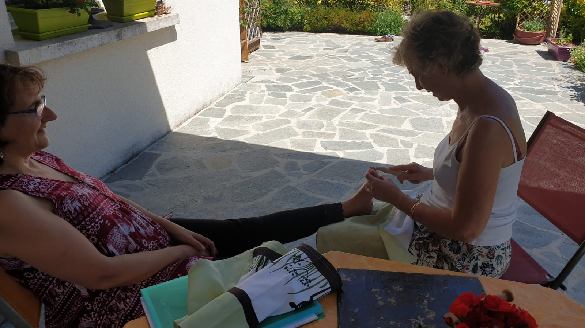

Foot Reflexology: A Pathway to Relaxation and Health

In our fast-paced world, finding time to unwind and prioritize our well-being can feel like an impossible task. Amidst the chaos of daily life, foot reflexology offers a serene escape—a pathway to relaxation and enhanced health. This ancient therapy, rooted in the belief that our feet are a microcosm of our entire body, provides a holistic approach to wellness.
What is Foot Reflexology?
Foot reflexology is a therapeutic practice that involves applying pressure to specific points on the feet, known as reflex points. These points correspond to various organs and systems in the body. When pressure is applied to specific areas on the feet, it is believed to stimulate energy flow and improve function in the corresponding body parts.
The Benefits of Foot Reflexology
- Stress Relief and Relaxation
One of the most immediate benefits of foot reflexology is its ability to induce deep relaxation. The gentle pressure applied during a session helps to calm the nervous system, reduce stress levels, and promote a sense of overall well-being. It’s like a mini-vacation for your feet! - Improved Circulation
Stimulating the reflex points on the feet encourages better blood flow throughout the body. Improved circulation helps deliver essential nutrients and oxygen to cells while aiding in the removal of toxins, leading to a healthier and more energized you. - Pain Relief
Whether you’re dealing with chronic pain or just the occasional sore spot, foot reflexology can offer relief. The technique can help alleviate tension and discomfort in various parts of the body, including the back, shoulders, and neck. - Enhanced Mood and Mental Clarity
Regular reflexology sessions can have a positive impact on your mood and mental clarity. By reducing stress and promoting relaxation, reflexology can help alleviate symptoms of anxiety and depression, leading to a more balanced and positive mindset. - Support for Overall Health
Beyond relaxation and pain relief, foot reflexology supports overall health by stimulating the body’s natural healing processes. It can aid in improving digestive function, supporting the immune system, and enhancing sleep quality.
What to Expect During a Session
A typical foot reflexology session begins with a consultation where the reflexologist will discuss any specific concerns or health issues you may have. The session usually involves sitting comfortably while the therapist applies pressure to different areas of your feet using their thumbs, fingers, and hands. The treatment is generally painless and may sometimes cause slight discomfort in areas that are out of balance. Sessions typically last between 30 to 60 minutes.
Incorporating Reflexology into Your Routine
To reap the maximum benefits of foot reflexology, consider incorporating it into your regular wellness routine. Whether you opt for professional sessions or learn self-care techniques for at-home use, making reflexology a part of your life can contribute significantly to your overall relaxation and health.
Final Thoughts
Foot reflexology is more than just a pampering treat—it’s a pathway to relaxation and improved health. By understanding the benefits and incorporating this practice into your wellness routine, you can take a proactive step towards better overall well-being. So, the next time you’re in need of some deep relaxation and a boost to your health, consider stepping into the world of foot reflexology.